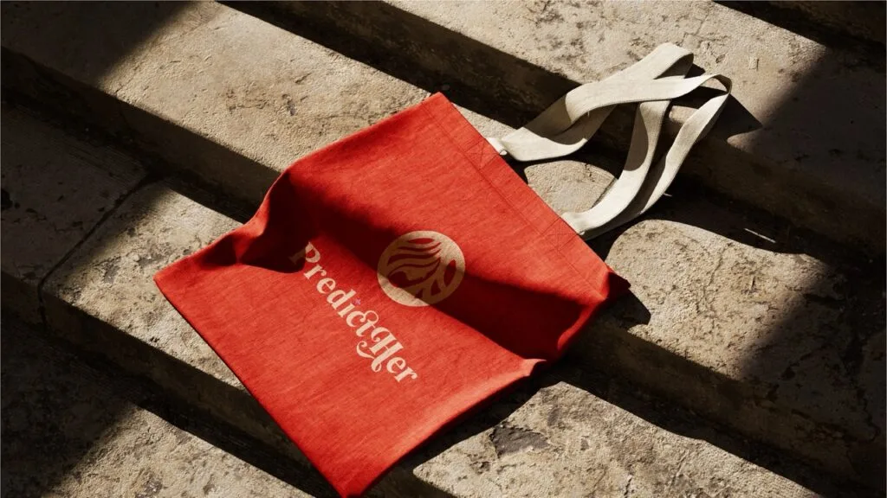

Predicther, health tech that feels warm.
Predicther is a women's health platform built to empower women through personalized wellness insights. I designed its logo and brand identity to communicate care, inclusivity, and empowerment across every touchpoint.

The objective
Predicther is a health-focused platform committed to empowering women through personalized wellness insights. The brief was to design a logo that communicates care, inclusivity, and empowerment. That meant creating a symbolic mark rooted in a nurturing approach, integrating a warm color palette, and building an identity that translates cleanly across every platform the product lives on.


Our approach
We combined a circle and a female silhouette into a single mark, using the circle to signal unity and wholeness. Flowing hairlines gave the symbol elegance and movement, while a color system built on skin tones and orange shades carried warmth and inclusivity. The symbol was then paired with a feminine, modern typeface so the wordmark and mark read as one coherent voice.


Process and outcome
The identity moved through six stages: discovery, concept development, logo refinement, color and typography, digital testing, and final delivery, with the design work produced in After Effects and Photoshop. The result delivers on four fronts the brand set out to own: empowering symbolism, emotional connection, a feminine aesthetic, and cross-platform consistency.
